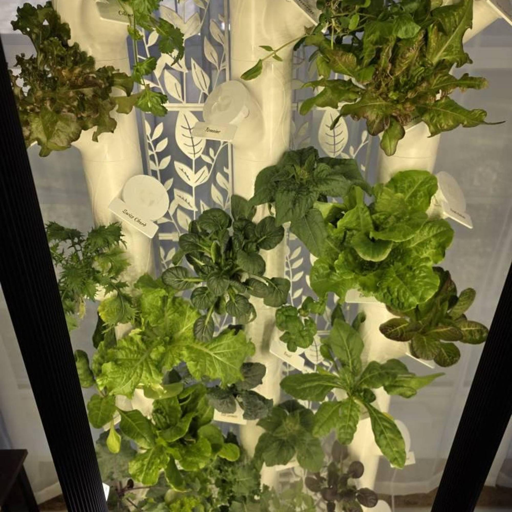
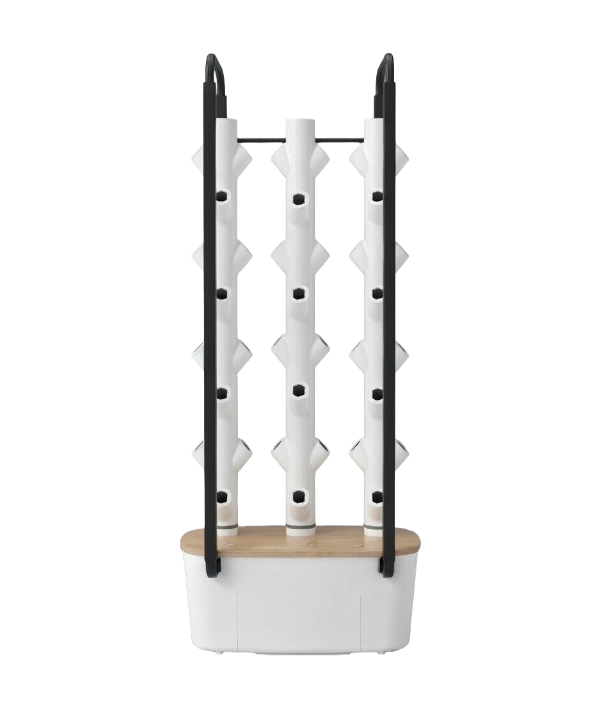
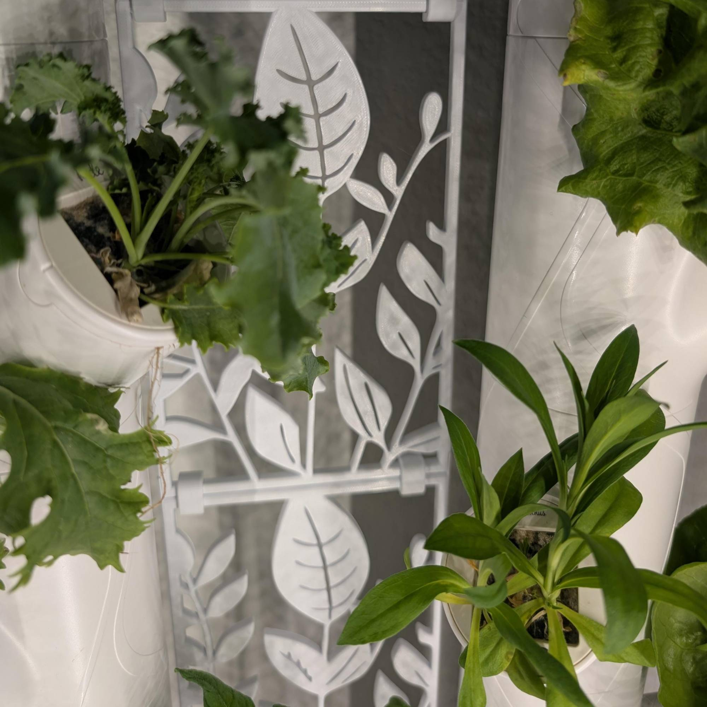
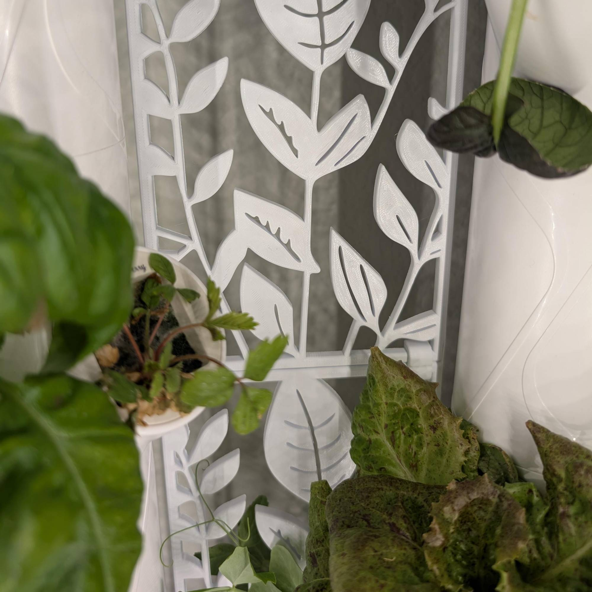
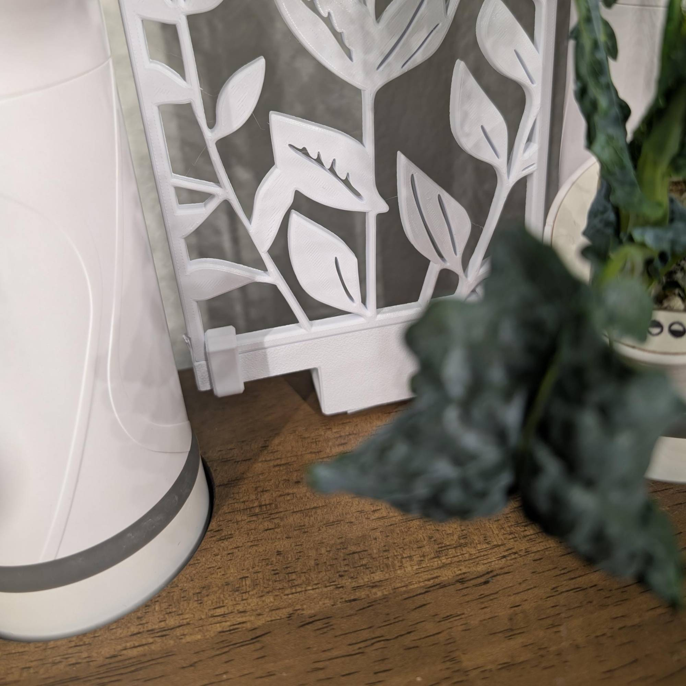
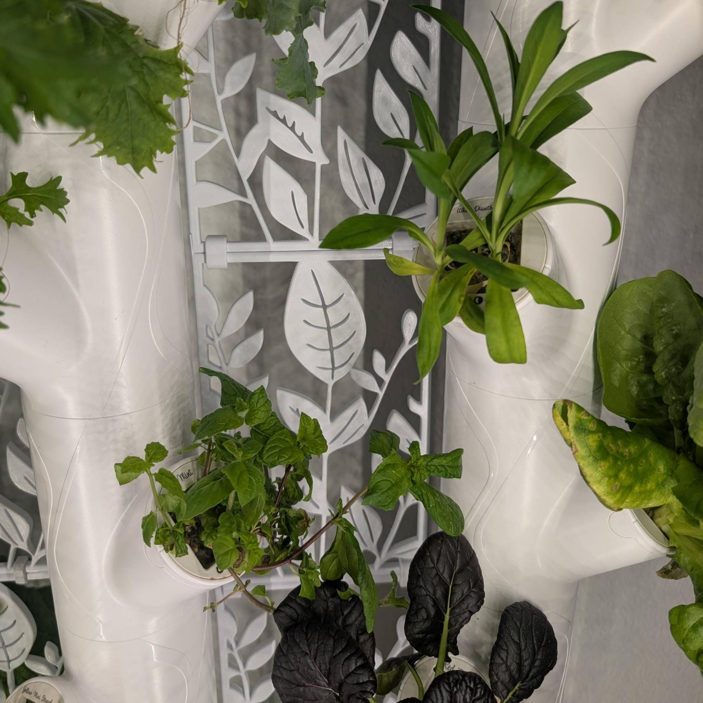
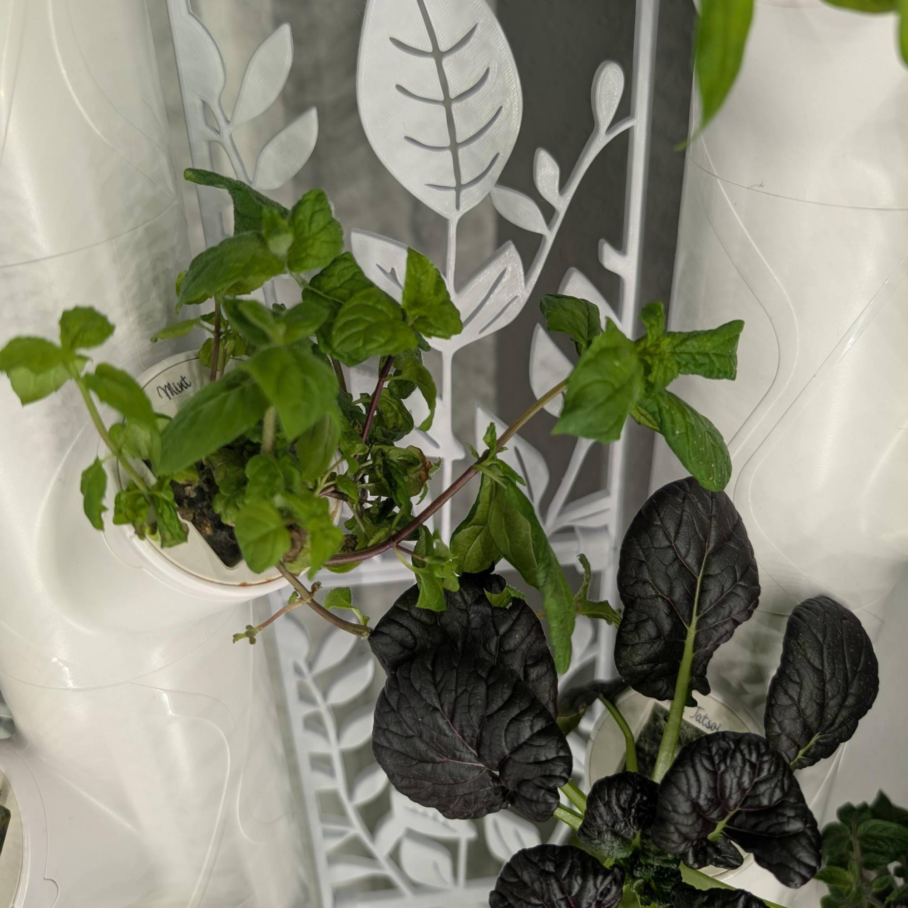
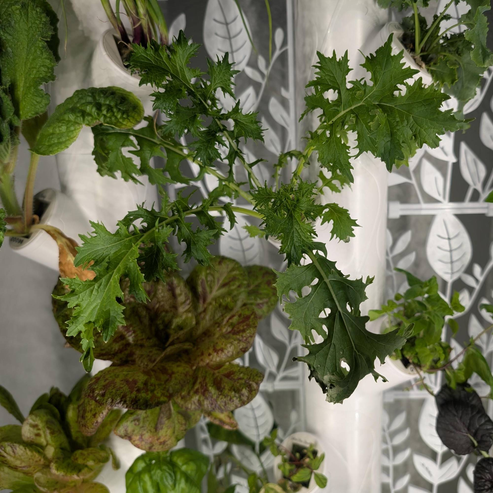

Give your Gardyn Home system the support it deserves. This custom trellis kit is designed and 3D-printed by VetROponics Systems, a veteran-owned small business passionate about helping growers.







The Gardyn Home system is an excellent hydroponic tower for growing fresh herbs, leafy greens, and vegetables indoors. However, without proper vertical support, fast-growing plants can become unruly, crowd neighboring pods, and reduce airflow and light penetration throughout the tower. Our custom 3D printed hydroponic trellis kit provides the structure your plants need to grow vertically and stay organized, maximizing yield while keeping your indoor garden clean and beautiful.
Designed and 3D printed specifically to fit the Gardyn Home hydroponic system, this trellis kit ensures perfect compatibility and tool-free installation — giving your climbing and vining plants professional-grade support without any hassle.
Use the hook and loop sections to secure the bottom brackets to your Gardyn Home base.
Clip the trellis panels into place using the provided panel clips for stability.
Secure the top clips to provide additional support and guide your plants as they grow.
VetROponics Systems is a veteran-owned small business dedicated to providing high-quality 3D printed hydroponic accessories for indoor gardeners. Founded by a Gulf War disabled veteran, we bring years of experience in manufacturing and customer service to every product we create. We specialize in accessories designed for the Gardyn Home hydroponic system, including vertical trellis kits and decorative grow pod caps.
We're passionate about sustainable indoor growing and helping fellow growers achieve success. All our hydroponic accessories are designed with care, 3D printed in the USA, and backed by our commitment to quality and customer satisfaction.
Ships from Texas for faster, eco-friendly delivery
Made to order in 3–5 business days
Carefully packaged to prevent damage
No tools are required. The kit uses a simple clip system that attaches directly to the Gardyn Home unit for quick and easy installation.
Yes. The trellis provides vertical support for plants that grow taller or produce heavier stems and fruit, helping keep your Gardyn organized and guiding plant growth upward.
Yes. The trellis kit is designed specifically to fit the Gardyn Home hydroponic system, ensuring a secure fit and proper support for your plants.
Yes. We offer a 7-day return window. If the product does not meet your expectations, you may return it within 7 days of delivery for a refund.
The trellis is especially beneficial for climbing and vining plants like cucumbers, beans, peas, and indeterminate tomatoes, as well as any taller herb or leafy plant that tends to flop or spread. The vertical support keeps them upright, improves airflow, and helps maximize light exposure across all pods in your Gardyn Home.
Yes. The trellis kit is 3D printed using food-safe PLA material, making it safe for use in a hydroponic growing environment where it may come into contact with edible plants.
No. This trellis kit is designed exclusively for the original Gardyn Home hydroponic system. It is not compatible with the Gardyn 2.0 or Gardyn 3.0 models due to differences in tower dimensions.
Yes. The trellis kit is fully reusable. Simply detach the panels and clips between growing cycles, rinse them clean, and reinstall when you're ready to support your next round of plants.
Get your custom trellis kit today and take your indoor garden to the next level.